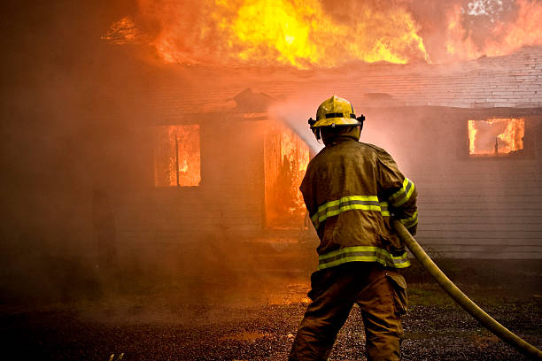

Culers would have been forgiven for fearing the worst when Vinicius Jr. stole the ball from Marc Casado in his own half, setting Kylian Mbappe off on a rapid counterattack. The French forward then outwitted Alejandro Balde before putting defending champions Real Madrid ahead within the first five minutes
However, just 22 minutes in, Barcelona prodigy Lamine Yamal embarked on a trademark slalom run and calmly placed his well-timed shot past Thibaut Courtois to level the score.
Nearly 15 minutes later, Robert Lewandowski converted from the penalty spot after Eduardo Camavinga fouled Gavi, taking him down inside the box.
On 39 minutes, Raphinha expertly headed in a Jules Kounde cross to give Barcelona a two-goal lead, before the Brazilian assisted Alejandro Balde to make it 4-1 at halftime.

On Friday, Southern California remained under the threat of additional fires fueled by intense Santa Ana winds, as firefighters worked to contain the raging flames that have claimed at least 10 lives and destroyed thousands of buildings.
Over 35,000 acres have burned in and around Los Angeles, including areas like West Hills, north of Calabasas, where the Kenneth fire ignited on Thursday and rapidly spread across 1,000 acres. Mandatory evacuation orders were lifted before midnight, and by Friday morning, about one-third of the fire was contained. However, Los Angeles Fire Chief Kristin M. Crowley warned that the outbreak underscored the ongoing danger, stating, 'We are absolutely not out of this extreme weather event.
The two biggest blazes in the region remained out of control but for a sliver — just 8 percent — of the Palisades fire, which has destroyed nearly 20,000 acres and more than 5,000 structures, many of them in Pacific Palisades on the west side of Los Angeles. The Eaton fire, near Altadena and Pasadena to the east, destroyed as many as 5,000 structures as it burned through 13,600 acres, fire officials said. That puts both fires among the five most destructive on record in California.
Elon Musk took his support for Germany's far-right party to a new level on Thursday, hosting a live conversation with its leader, Alice Weidel.
The 74-minute discussion touched on a wide range of topics, from energy policy and German bureaucracy to Adolf Hitler, Mars, and the meaning of life.
The world's wealthiest individual openly encouraged Germans to support Alternative für Deutschland (AfD) in the upcoming elections, marking his latest controversial move into European politics.
The interview, which had generated significant attention amid accusations that Musk was attempting to influence Germany's snap election, was conducted in English. It served not only as a platform for Musk to express his views but also as an opportunity for the AfD to connect with global audiences through Musk’s X platform.
Aware of Musk's close ties to Donald Trump, Alice Weidel made a point to voice her support for the US president-elect and his team. She described her party as "conservative" and "libertarian," claiming it had been unfairly portrayed by the mainstream media as extremist.
Parts of the AfD have been officially classified as right-wing extremist by German authorities.